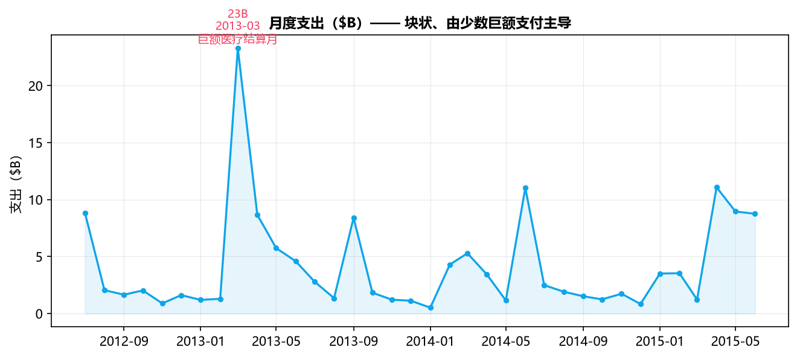
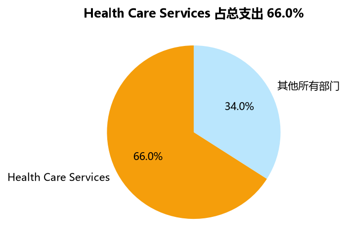
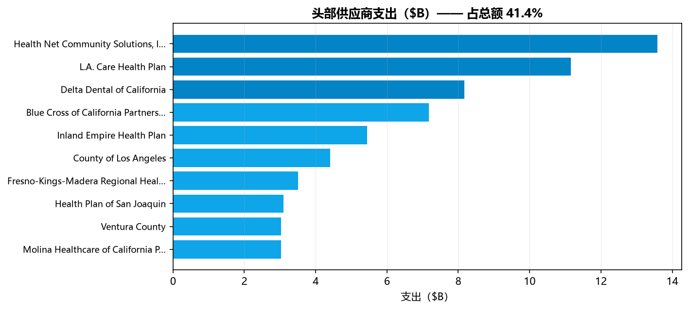
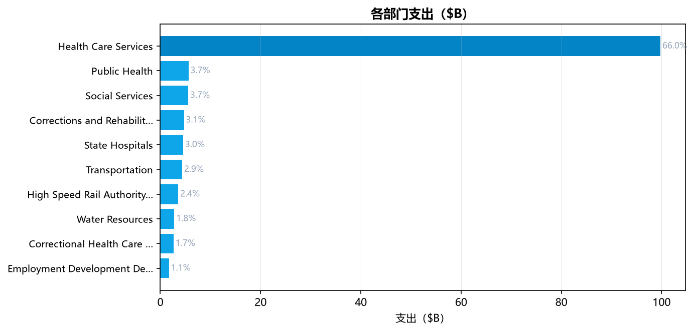
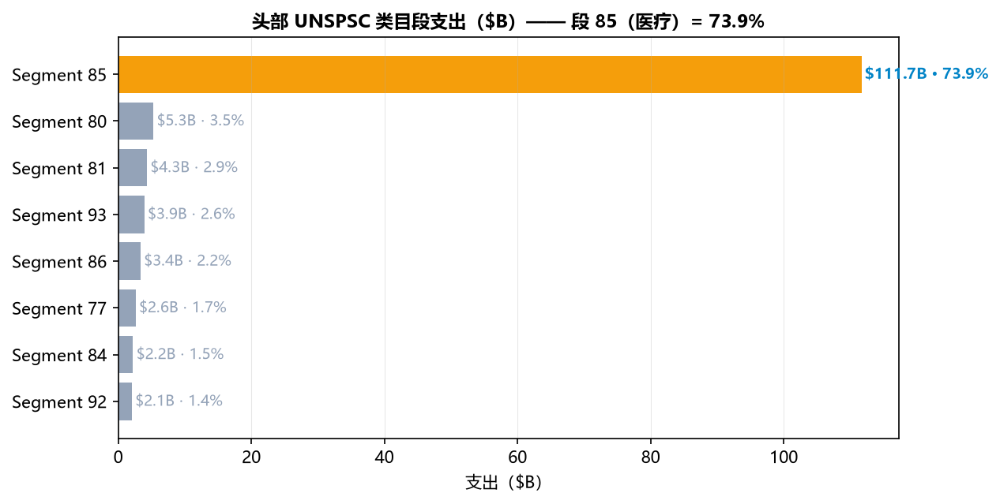
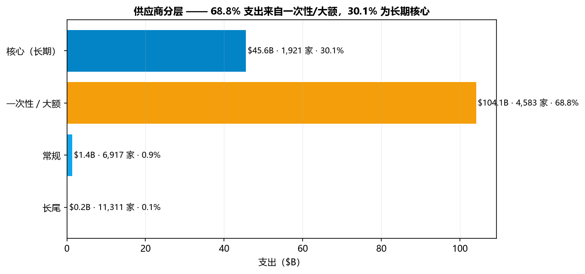
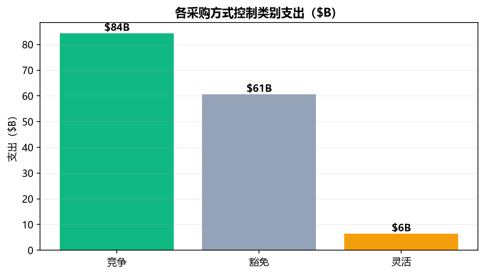
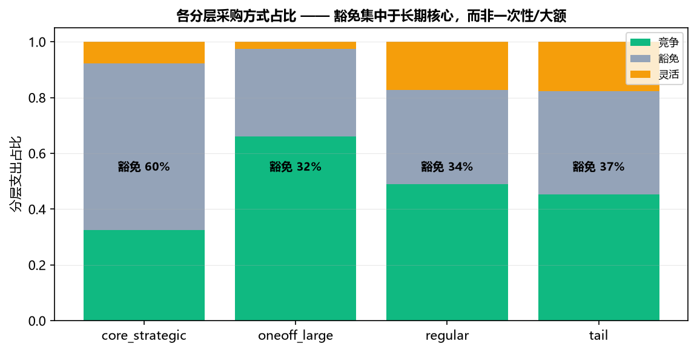

对 34.6 万条州级采购订单做分析：找出钱集中在哪、哪些支付带对账与控制风险、以及该怎么办——把原始采购数据变成可落地的成本与合规方案。
加州为 200,533 张采购订单、涉及 24,732 家供应商执行采购。采购与财务团队通常看不清三件驱动成本与风险的事：
关于"对账"的边界说明。 本项目交付数据层对账：把一份脏乱的 90.9 万行导出，归并成一致、去重、可匹配的采购订单表。业务层支付对账（索赔 vs 发票 vs 订单）需要本导出不含的索赔与发票数据——我们量化了这一缺口并把它列为下一步，而不是宣称已经完成。
一句话目标： 识别少数高影响力杠杆——非标准方法的控制审查、巨额医疗支付方的对账与费率审计、战略供应商管理——来保护纳税人资金。
原始 CSV 约有 90.9 万条物理行，但只有 346,018 条逻辑记录：许多文本字段（品名、描述）跨多行，简单按行读取会多算。关键步骤（scripts/clean_data.py）：
| 问题 | 处理 | 影响 |
|---|---|---|
| 物理行 vs 逻辑行 | 读完整行；多行文本字段属于同一条记录 | 90.9 万行 → 346,018 条干净记录，0 行丢失 |
金额为 $1,234.56 字符串 | 去掉 $/逗号，解析为浮点 | 单价与总价可用于计算 |
日期为 MM/DD/YYYY 文本 | 解析为 datetime，派生月份/财年 | 时间趋势与巨额支付月份可见 |
位置脏字段 "ZIP\n(lat,lon)" | 只保留 5 位邮编 | 262,270 行带干净邮编 |
| UNSPSC 代码 | 取前 2 位作为产品段 | 可做类目归并 |
| 采购方法 | 映射为控制类别：竞争 / 豁免 / 灵活 | 识别不受控支出 |
| 日期（尤其 Purchase Date） | 年份合理性检查（2000–2026）；荒谬年份（1911–2912）→ NaN | 17,634 个采购日期置空，0 行丢失 |
无行被删除；90.9 万→34.6 万的差异是读取口径问题。原始 Purchase Date 字段很脏（年份 1911–2912）：17,634 个荒谬值置为 NaN，使下游分析不能静默使用它们；干净的 creation_date（2012–2015）驱动时间趋势。
| 指标 | 公式 / 定义 | 为何重要 |
|---|---|---|
| 总支出 | 所有行的 Σ total_price | 项目规模 |
| CR4 / CR8 | top4 / top8 收款方支出 ÷ 总额 | 最大收款方中的集中度（对账目标集合） |
| Top10 份额 | top10 供应商 ÷ 总额 | 采购整体集中程度 |
| HHI | Σ (供应商份额)²（次要） | 标准集中度指数（0–1），作为备注 |
| 方法控制类别 | 竞争 / 豁免 / 灵活 | 各采购渠道的支出占比 |
| 豁免方法支出 | Σ 以合法豁免方式路由的支出 | 占支出 40.1%——合法但需治理审查，不是"马弗里克式购买" |
| 灵活方法支出 | Σ SOQ / NCB / 紧急等支出 | 可审查 / 更高风险采购 |

支出是块状的，不是平稳的：少数巨额支付月份主导（2013-03 = $23B，由一笔给某健康计划的 $11B 支付驱动；2014-15 的 4/6 月也冲高）。多数月份在 ~$4B 以下。
围绕健康支付日历安排现金流，而不是平均月度目标；把这类一次性/巨额结算当作独立对账工作流，而非常规采购。

单一部门——Health Care Services——占全部支出 66%。凡是驱动健康支付方成本的，就会驱动整个州预算。
成立专门的医疗支付方支付项目：三分之二支出在此，一支专职的对账与费率审计团队可数倍回本。

Top10 收款方占 41.4% 的全部支出，且每一个都是医疗支付方组织（Health Net、L.A. Care、Delta Dental、Blue Cross、IEHP、Molina…）。钱集中在支付接收方，而非货物供应商。
把这些当作一个支付对账群体：核对索赔 vs 发票 vs 订单、审计费率协议与结算时点、跟踪未冲销返点/退货计提——而不是货物议价对象。

Health Care Services 主导；其余是跨矫正、交通、水利、教育的长尾——每项远低于 4%。
对长尾，推动标准目录/框架采购，把零散小额采购纳入受管渠道。

按产品类目，UNSPSC 段 85（医疗）= 支出的 73.9%；其它都望尘莫及。
为段 85 建立类目基准基线，使高于市场的单价在签约时即显现；配合支付层检查（费率 vs 协议）。
原理。 KMeans 把供应商分组，使组内相似、组间不同，使用"规模 × 粘性"的缩放特征：总支出、平均订单、订单数、订单频率、活跃年数（对数/标准化）。
为什么（业务驱动）。 仅按支出排名会误导：它分不清一次性巨额结算和稳定的多年战略伙伴——两组需要完全不同的管控。聚类把它们分开。
怎么用。 StandardScaler → 业务选定 k=4（轮廓系数偏好 2——一个大团块不可解；k=5/6 分数更高但只是细分低频尾部，不产生新业务含义组）→ n_init=10、固定种子。长期核心与朴素 top-N 截断交叉验证：与 top20 支出者仅重叠 6/1,921。
| 层 | 供应商 | 支出 | 份额 | 特征 |
|---|---|---|---|---|
| 核心（长期） | 1,921 | $45.6B | 30.1% | 多年、高频伙伴——战略关系对象 |
| 一次性 / 大额 | 4,583 | $104.1B | 68.8% | 单次 / 低频大额支付——对账与费率审计群体 |
| 常规 | 6,917 | $1.36B | 0.9% | 中等规模、偶发 |
| 长尾 | 11,311 | $0.17B | 0.1% | 小、一次性 |
对"核心"的诚实解读。 长期核心并不全是"供应商"：190 家是公共机构（县/市/州——洛杉矶县 $4.4B、文图拉 $3.0B…），即占核心支出 57.8%，另有 1 家"Unknown"。这些是政府间支付，不是可议价的供应商；其余约 42% 的核心才是建议 #3 瞄准的私营战略供应商集合。

对"规模 × 粘性"做 KMeans，把 占支出 68.8% 的一次性/大额（单年、低频大额结算）与 占 30.1% 的长期核心（1,921 家多年伙伴）分开——这是支出排名做不到的切分。核心与 top20 支出者仅重叠 6 家。
把一次性/大额层路由到支付对账工作流（索赔 vs 发票 vs 订单、结算时点、费率 vs 协议）；把关系管理留给长期核心——长期杠杆在这里。
原理。 每张订单映射为控制类别——competitive（公开竞争）、exempt（合法豁免竞争）、flexible（非标准但可审查的方法，如资格声明、非竞争、紧急）。
为什么。 控制是集中度之后的第二杠杆：不受控支出既是欺诈风险、也是错失节省所在。
怎么用与诚实框定。 支出切分为 55.7% 竞争 / 40.1% 豁免 / 4.2% 灵活。豁免的 40.1%（~$60.6B）不是"马弗里克式购买"——许多是合法渠道（医疗支付、法定豁免、单一来源）——但占 40% 就值得附文档化理由 + 抽样，而不是默认接受。

竞争与合法豁免方法承担大部分支出；$6.36B 仍流经值得流程审查的灵活方法，且豁免份额（40.1%）需要文档化依据。
抽样审查最高额的灵活方法采购，并为每笔豁免支付附上文档化豁免理由；设定"受管支出"目标，把更多采购拉进受控渠道。

把方法 × 分层交叉后直觉反转：豁免集中在长期核心（59.7%）——主要是政府间法定转移——而一次性/大额层多为竞争（≈66%）。豁免 ≠ 大额一次性支付。
治理两件不同的事：为核心（政府间转移）文档化豁免依据；对一次性/大额层的竞争合同做索赔-发票-订单对账——一个独立工作流。
68.8% 的支出是一次性/大额，集中在占 41.4% 的 top 医疗支付方、且多为竞争合同。核对索赔 vs 发票 vs 订单并审计费率与结算时点——这需要导出不含的索赔/发票数据，故列为下一步，不宣称已完成。
豁免（40.1%）集中在长期核心（59.7%）——主要是政府间法定转移。在此附文档化理由；抽样审查 $6.36B 的灵活方法采购。
1,921 家长期核心收款方中约 42% 是私营多年供应商（占总支出的 30.1%）；当作战略账户管理。约 58% 公共机构是政府间支付——治理，而非议价。
为段 85 增加 SKU 级 / 市价基线，使未来的单价筛查成为真正的超价检测器，而非误导性标记队列。
仓库交付物：清洗表（output/procurement_clean.parquet）、灵活/异常/分层输出、图表（assets/）、本报告。